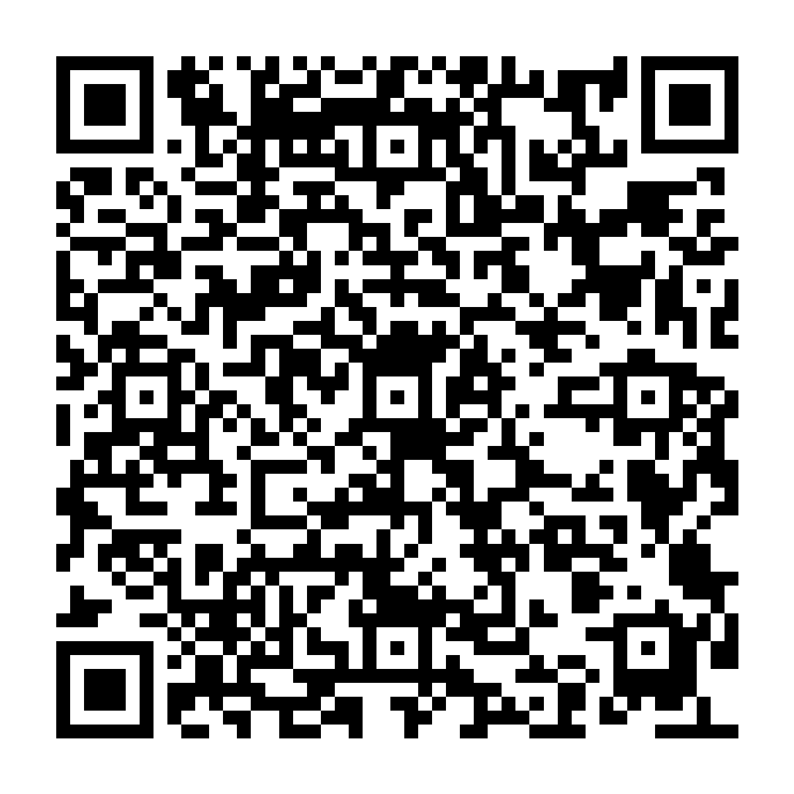

https://taliakberler.github.io/beyond-the-white-and-blue — regenerate with npm run qr after changing BASE_URL or stop IDs.Beyond the White and Blue
Scan with your phone camera to start the tour
5 stops · free · no app needed
https://taliakberler.github.io/beyond-the-white-and-blue/
Beyond the White and Blue
Scan with your phone camera to open this stop
https://taliakberler.github.io/beyond-the-white-and-blue/index.html#stop=unsung-founders-memorial
Beyond the White and Blue
Scan with your phone camera to open this stop
https://taliakberler.github.io/beyond-the-white-and-blue/index.html#stop=steele-building
Beyond the White and Blue
Scan with your phone camera to open this stop
https://taliakberler.github.io/beyond-the-white-and-blue/index.html#stop=lenoir-hall
Beyond the White and Blue
Scan with your phone camera to open this stop
https://taliakberler.github.io/beyond-the-white-and-blue/index.html#stop=the-pit
Beyond the White and Blue

Scan with your phone camera to open this stop
https://taliakberler.github.io/beyond-the-white-and-blue/index.html#stop=old-chapel-hill-cemetery